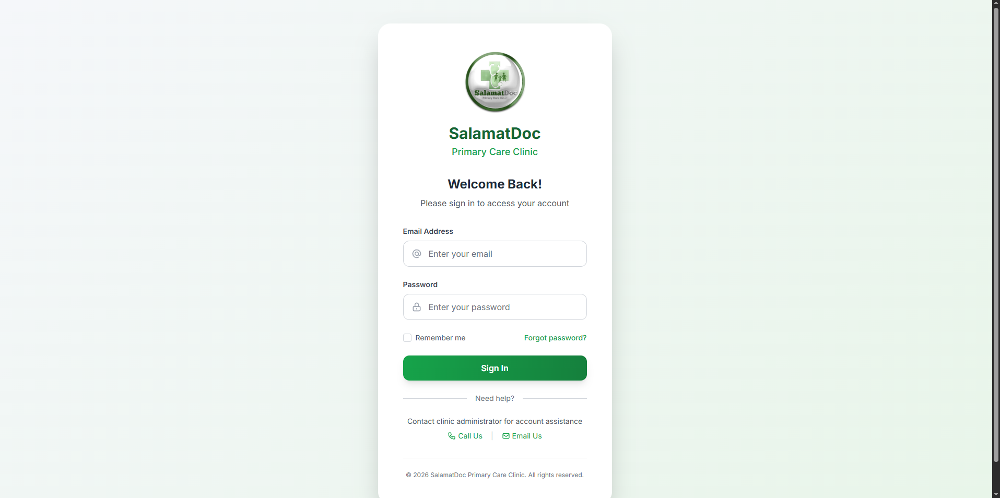
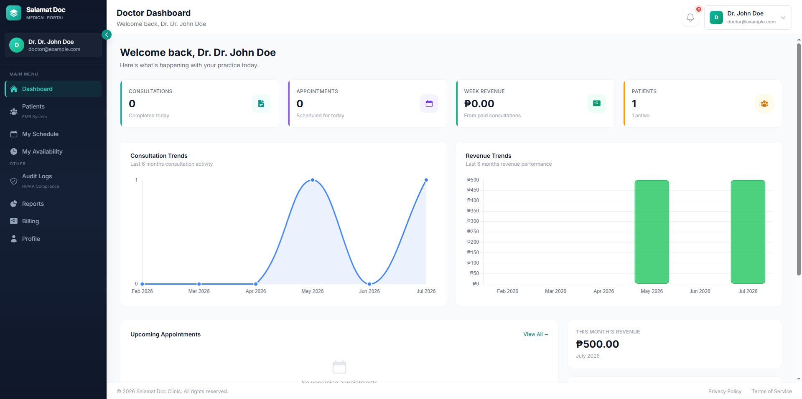
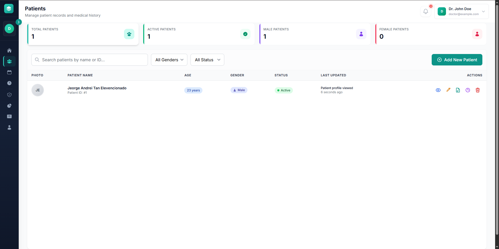
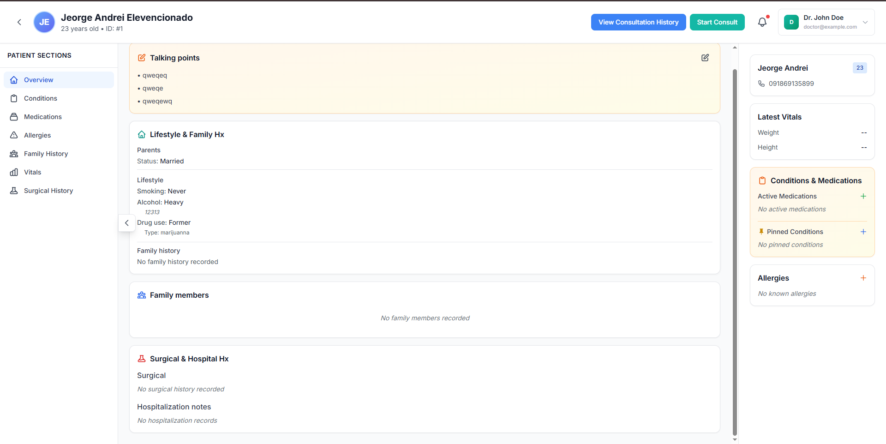
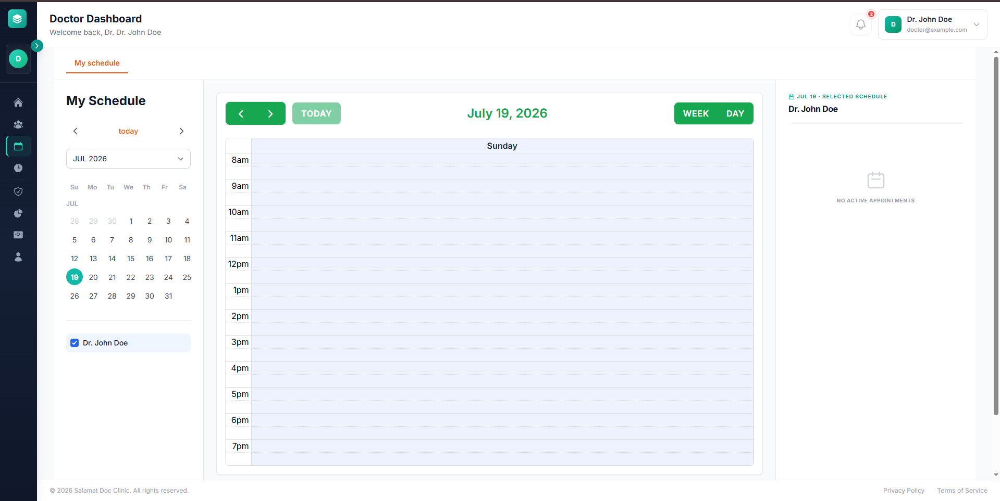
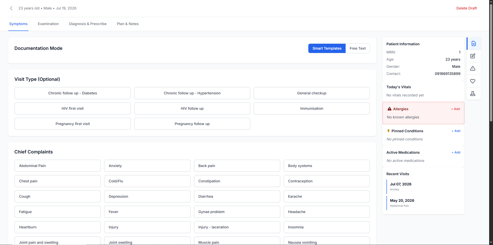

Complete visual documentation of the Online Integrated Information System for SalamatDoc Clinic. Showcasing key features and user interfaces.

Main entry point featuring clinic information, services overview, and quick access to patient registration and login.

Centralized admin dashboard with key metrics, recent activities, appointment statistics, and system overview at a glance.

Complete patient records management with search functionality, patient details, medical history, and records organization.

Detailed patient profile showing personal information, medical history, appointment records, and treatment details.

Intuitive appointment booking interface with calendar view, time slot management, and automated scheduling system.

Comprehensive consultation tracking with patient diagnosis, treatment plans, prescriptions, and follow-up scheduling.